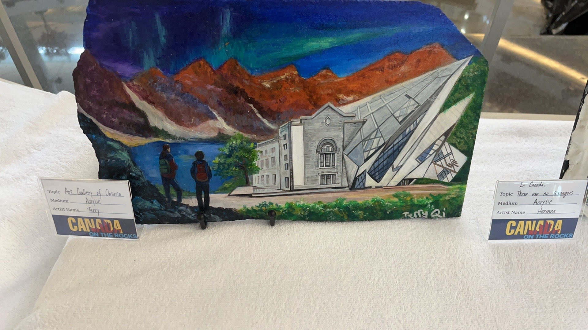

This stone carving imaginatively blends Canada's natural beauty with its cultural landmarks. In the foreground, two figures with backpacks stand by the water, gazing at the view before them, symbolizing the exploration of Canada's natural beauty.
To the right is a detailed view of the Art Gallery of Ontario, showcasing its classical stone structure and modern fiberglass and steel structure. Behind the building, a reddish-brown mountain, illuminated by purple, blue, and green, resembles the northern lights.
